In this document
This new suite of tests requires human intervention and some external hardware including a Loopback Plug, a USB reference microphone and external speakers. For devices without 3.5 mm (⅛”) headset port, the user will be able to skip the test and mark it as successful. See the sections below for details.
Loopback plug latency test
Round trip latency in audio is defined as the time it takes an audio signal to be recorded, processed and output back.
To measure round-trip latency using CTS Verifier, connect a loopback plug to the 3.5 mm (⅛”) headset connector. (If you don’t have a loopback plug, you can easily make one following the Audio Loopback Dongle instructions.
| Start CTS Verifier Loopback Test | 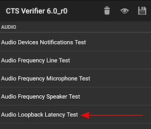 |
| Summary of instructions is displayed | 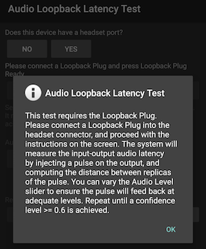 |
| Report if the device has a headset port: YES if the device under test has a physical headset port NO if there is no headset port |
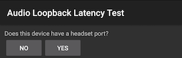 |
| If the answer was NO in the previous step, press Pass (green check) on the bottom of the test and finish | |
| If the answer was YES in the previous step, continue
to connect loopback plug. Connect a loopback plug to the headset port Press the Loopback Plug Ready button | 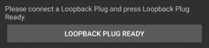 |
| Move the slider until the signal level is greater than 60% Press TEST |
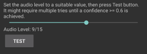 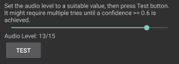 |
| Wait several seconds while the latency test is performed | |
| When the test is finished, results are shown The minimum confidence level for a test to succeed is 0.6 Lower latency numbers are preferred, but no number is enforced |
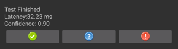 |
| Press the Pass (green, only available if successful) or Failed (red) button to record the results. | 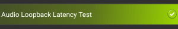 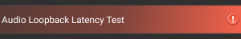 |
Audio frequency line test
Using a loopback plug, this test will characterize the left/right line audio output and use the mic feedback from the plug to capture audio and compute a frequency response for each channel.
A simple criterion for minimum energy expected in each band (out of four) is applied per channel.
| Start CTS Audio Frequency Line Test | 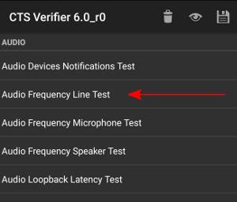 |
| Summary of instructions is displayed | 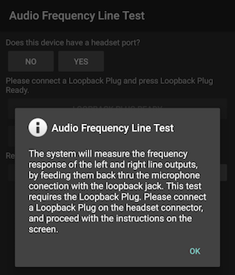 |
| Report if the device has a headset port: YES if the device under test has a physical headset port NO if there is no headset port |
|
| If the answer was NO in the previous step, press Pass (green check) on the bottom of the test and finish | |
| If the answer was YES in the previous step, continue
to connect loopback plug Connect a Loopback Plug to the headset connector (see Loopback plug latency test) Press the Loopback Plug Ready button | 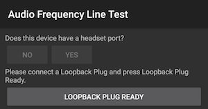 | Press TEST | 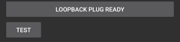 |
| Wait several seconds while the frequency tests are performed | |
| When the test is finished, results are shown | 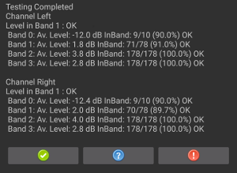 | Press the Pass (only available if successful) or Failed button to record the results | 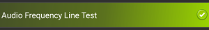 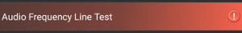 |
Audio frequency speaker test
This test uses the signal captured by an external USB reference microphone to assess the frequency response of left (and right, if it exists) loudspeakers.
A reference microphone is defined as that one that delivers flat, uncolored response. They are often used for analysis and measurement equipment.
There are some inexpensive USB Reference microphones (e.g., miniDSP USB Measurement calibrated microphone, Dayton Audio UMM-6 USB Measurement Microphone), mostly used for the home theater enthusiasts to calibrate their setups.
Minimum recommended reference microphone characteristics:
Flat Frequency response on range 100 Hz - 20 kHz: +/- 2 dB
S/N ration 70 dB (A-weighted)
THD Ratio @ 1000 Hz less than 1 % at 127 dB SPL
| Start CTS Audio Frequency Speaker Test | 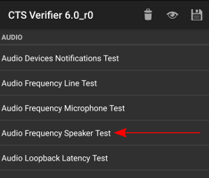 |
| Summary of instructions is displayed | 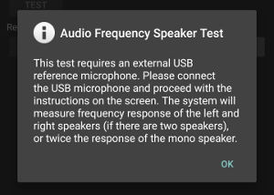 |
| Connect a USB reference microphone (see Audio frequency speaker test) Press USB REFERENCE MICROPHONE READY |
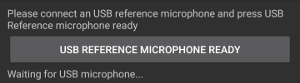 |
| Set up DUT (Device Under Test) in a quiet room and USB microphone 20cms perpendicular to center of screen | 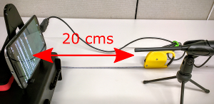 |
| Press TEST | 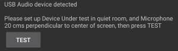 |
| Wait several seconds while the frequency tests are performed | 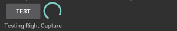 |
| When the test is finished, results are shown | 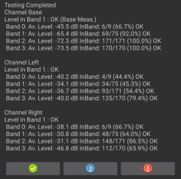 | Press the Pass (only available if successful) or Failed button to record the results | 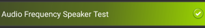 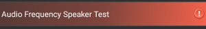 |
Audio frequency microphone test
This test is more involved than the previous ones. It requires the use of both: External speakers for a white noise sound source, and a USB reference microphone to use as a reference for the sound. Although this process is more involved, it can be performed with affordable, easy to get, hardware
External speakers positioned 40cm from the device are used to deliver a white noise sound source. These speakers don’t need to have a “Flat” frequency response, but need good coverage from low frequencies (100 hz) to high frequencies (20khz) is expected which is usually met by portable or medium size self powered speakers (e.g. Sony SRS-X5 portable speakers)
The key element here is that a step for calibration (using the USB reference microphone) is performed, to estimate the actual response of the speakers, thus have a solid reference to compare the built in microphone against.
| Start CTS Audio Frequency Microphone Test | 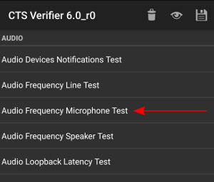 |
| Summary of instructions is displayed | 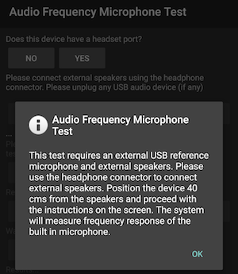 |
| Set up DUT in a quiet room Position the speakers 40cm perpendicular to the center of the screen of the DUT (see Audio frequency microphone test ) |
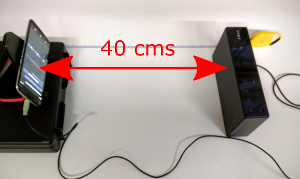 |
| Report if the device has a headset port: YES if the device under test has a physical headset port NO if there is no headset port |
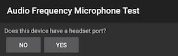 |
| If the answer was NO in the previous step, press Pass (green check) on the bottom of the test and finish | |
| If the answer was YES in the previous step, continue
to connect external speakers. Connect external speakers using the headphone/line out connector (remember to unplug any USB microphone) Press EXTERNAL SPEAKERS READY |
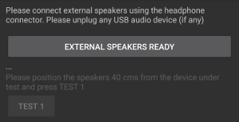 |
| Press TEST 1 | 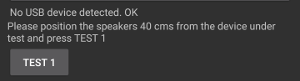 |
| Wait several seconds for test 1 to complete. | 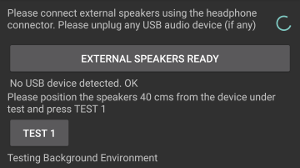 |
| When test 1 is completed, results for the built in microphone are shown. | 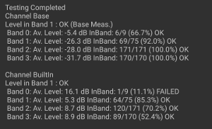 |
| Connect a USB Reference microphone (see Audio frequency speaker test
) Press USB REFERENCE MICROPHONE READY |
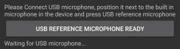 |
| Position USB microphone right next to built-in microphone in DUT, pointing towards external speakers | 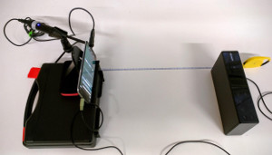 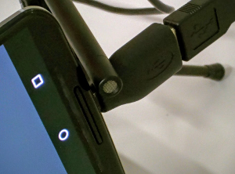 |
| Press TEST 2 | 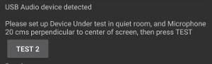 |
| Wait several seconds while the test 2 runs | |
| When test 2 is completed, results for the USB reference microphone are shown. | 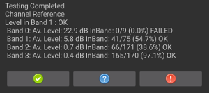 |
| Press the Pass (only available if successful) or Failed button to record the results. | 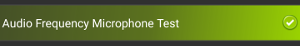 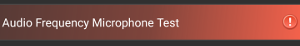 |